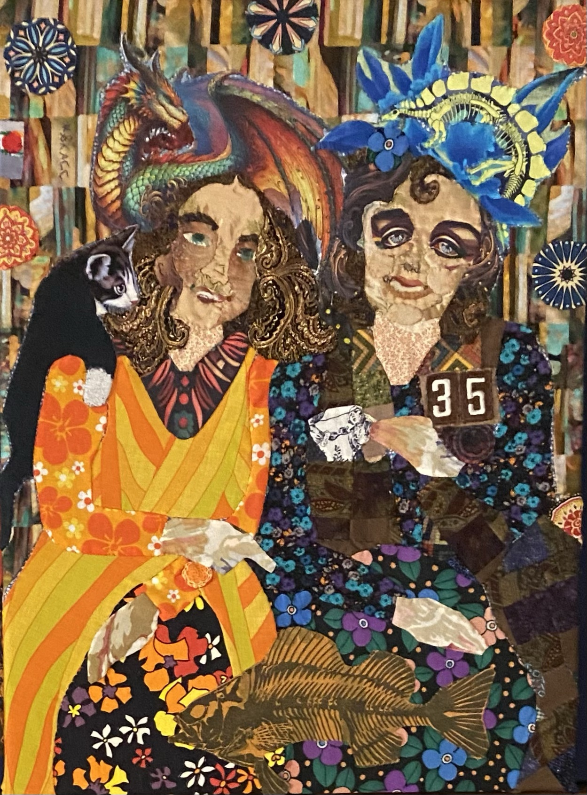
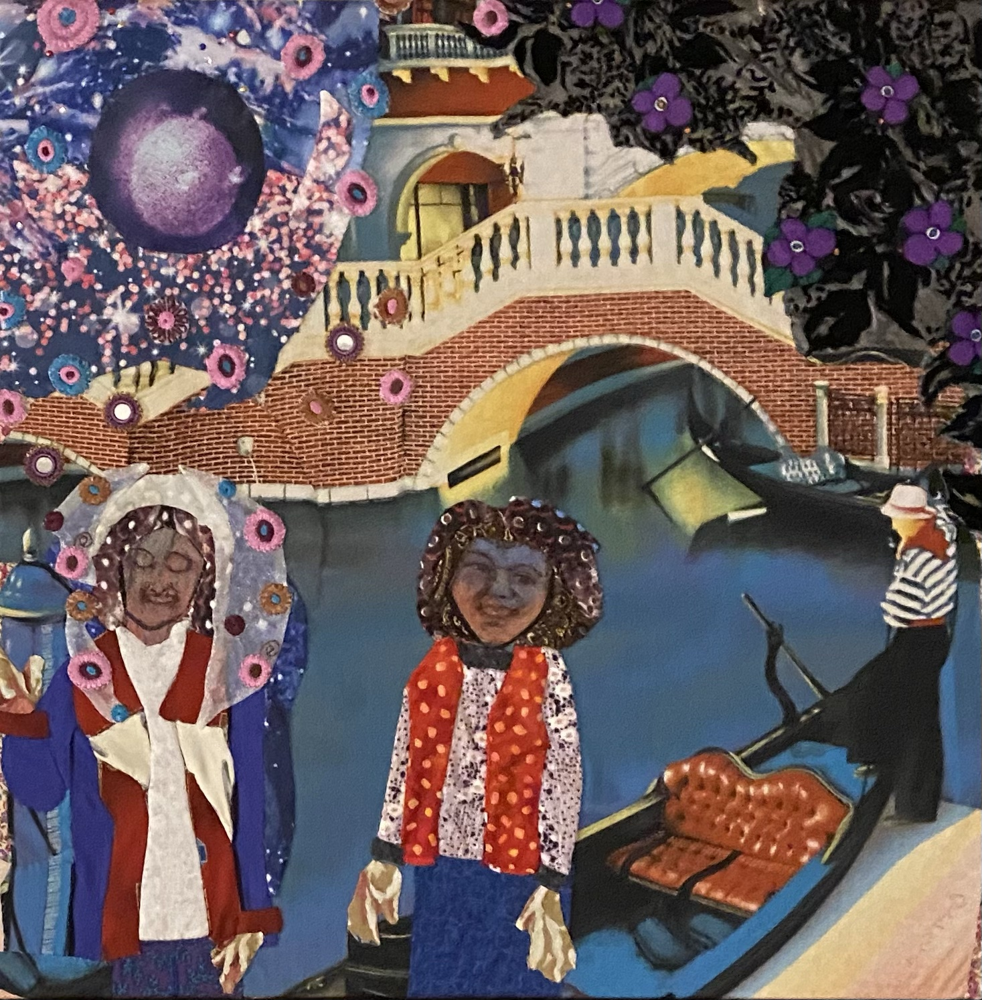

Karen Swan · Textile Artist
Stories made
in fabric.
Hand appliquéd textile collage shaped by memory, imagination, family, books, and the lives of the people each piece is made for.

Selected & Recent Work
A body of work built slowly, one piece at a time.
Narrative collages, mandalas, books, blankets, commissions, and experiments across other mediums.






Commissioned Work
A piece can begin with a memory, a person, a book, or a place.
Karen works directly with clients to turn meaningful ideas into one-of-a-kind pieces made by hand.
Start a conversation